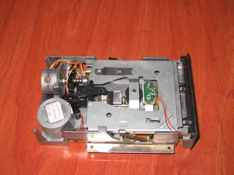
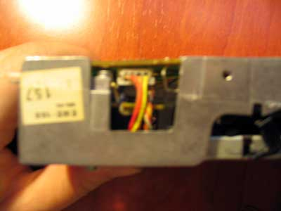

CAMBIA LA GOMA A TU DISQUETERA DE 3".
En esta entrega vamos a hacer frente a una de las averías más comunes de las
disqueteras de 3" que incorporan el Spectrum +3 y otros ordenadores como el Amstrad
CPC 6128, que no es otra que la rotura o pérdida de eficacia de la goma que
transmite el movimiento rotatorio del motor de la disquetera al disco que hemos
introducido.
Esta reparación es muy sencilla, tan solo es necesario poner un poco de cuidado, como
siempre que trabajamos sobre el hardware de nuestro ordenador, para tener a punto la
disquetera en 10 minutos.
Para efectuarla necesitaremos el siguiente material (ver Imagen 1):
- Goma nueva para la disquetera. Las medidas de la goma son 72mm x 3mm x 0.5mm, aunque
seguramente una goma con medidas ligeramente distintas valdrá.
- Un destornillador de estrella (para abrir el +3 y extraer la disquetera).
- Recomendamos el uso de unos alicates planos o pinzas para extraer con cuidado pero
firmemente los conectores internos que lleva la disquetera.
|
|
| Imagen 1. Material necesario |
Lo primero que tenemos que hacer es abrir el Spectrum +3. Quitamos los dos tornillos del
lateral derecho (el lateral de la disquetera) y los seis de la parte inferior con un
destornillador de estrella. Hecho esto procedemos a levantar el teclado con sumo
cuidado, veremos que nos lo impide el cable que alimenta el led rojo (situado en
posición central) y las dos cintas del teclado (en el lateral izquierdo). Desprendemos
el conector del led situado en la placa (Imagen 2) y las dos
cintas del teclado (Imagen 3), esto con sumo cuidado. No hace
falta explicar cuál es uno de los puntos más débiles del Spectrum. De esta manera
podremos acceder tranquilamente a la zona de la disquetera para desmontarla.
|
|
| Imagen 2. Conexión del led indicador de
encendido
|

|
| Imagen 3. Conexiones de la membrana a la placa
base
|
Para extraer la disquetera del chasis del ordenador, debemos desatornillar los dos
tornillos que la sujetan (Imagen 4), así como las tomas de datos
y alimentación (Imagen 5), que se encuentran en la parte
posterior de la misma.
|
|
| Imagen 4. Tornillos de sujección de la
disquetera
|
|
|
| Imagen 5. Conectores de datos y alimentación
eléctrica
|
Ya tenemos la disquetera extraida para poder trabajar cómodamente (Imagen
6). Lo primero que haremos será introducir un disquete. Así conseguiremos que al
mover la disquetera no se pierda una pequeña punta que se encuentra en su interior y que
detecta si el disco está o no protegido contra escritura, y que es muy fácil de perder.
Una vez asegurados contra este posible contratiempo, en la parte posterior hay una placa
que debemos desatornillar (puntos 1, 2 y 3 - Imagen 7) para poder
acceder a la zona donde se encuentra la goma que queremos sustituir.
| 
|
| Imagen 6. La disquetera de 3" |
|
|
| Imagen 7. Placa de la disquetera. Tornillos 1,
2 y 3
|
Ya estamos a un paso de acceder a la goma. Pero antes, para separar la placa y poder
sustituirla, debemos quitar dos conectores que se encuentran en los laterales de la
disquetera (Imagen 8 e Imagen 9). Para
hacerlo recomendamos el uso de los alicates planos, para así poder tirar firmemente pero
con cuidado del conector y no romper las soldaduras ni forzar los cables.
|
|
| Imagen 8. Conector en un lateral |
| 
|
| Imagen 9. Conector en el otro lateral |
Ya podemos quitar la goma estropeada (si existiese) y sustituirla por la nueva. Por si
la disquetera no tuviera goma (Imagen 10), o estuviera fuera de
su sitio o completamente cuarteada, debe ir colocada entre el disco negro grande y el
cilindro metálico, tal y como se aprecia en la Imagen 11.
|
|
| Imagen 10. Zona interior de la disquetera |
|
|
| Imagen 11. Disquetera con la goma
reemplazada
|
Por último, sólo nos queda montar todo de nuevo con cuidado, no olvidando enchufar
ninguno de los conectores, y cerrar el ordenador, para disfrutar de nuevo de nuestra
flamante disquetera de 3".
NOTA: Amstrad puso en el mercado variaciones sobre el modelo de disquetera que se ve en
las imágenes, pero los pasos que se han de seguir para abrirla y sustituir la goma son
los mismos, pudiendo variar la ubicación de algún conector o tornillo.